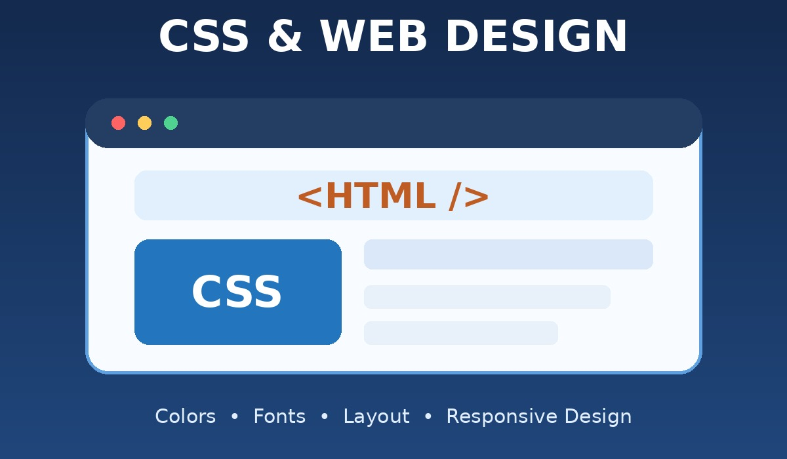

المقدمة
شهدت شبكة الإنترنت تطورًا هائلًا منذ نشأتها في أوائل التسعينيات. في البداية كانت صفحات الويب عبارة عن مستندات نصية بسيطة تعتمد فقط على لغة HTML، وكانت تظهر بلون أسود على خلفية بيضاء بدون أي تنسيق أو جمال، وكانت التجربة مملة جدًا للمستخدم.
مع زيادة عدد المواقع وتنافس الشركات على جذب المستخدمين، ظهرت الحاجة الملحة إلى لغة تهتم بالناحية الجمالية والبصرية. هنا ظهرت لغة CSS، وهي اختصار لـ Cascading Style Sheets وتعني أوراق الأنماط المتتالية.
تم اقتراح الفكرة بواسطة Håkon Wium Lie في عام 1994، وتم إصدار أول نسخة رسمية CSS1 في ديسمبر 1996 من قبل منظمة W3C. بعدها تطورت إلى CSS2 عام 1998 ثم CSS3 التي نستخدمها اليوم.
فكرة CSS بسيطة لكنها عبقرية: فصل المحتوى عن الشكل؛ بمعنى أن HTML تكتب الكلام، وCSS تلبسه وتزينه. أهمية دراسة CSS أنها أساس لتصميم منصات الويب الحديثة.
عرض الموضوع

أولًا: كيف تعمل لغة CSS؟
تعتمد CSS على قاعدة بسيطة تتكون من ثلاثة أجزاء:
- المحدد (Selector): العنصر الذي نريد تنسيقه مثل p أو h1 أو div.
- الخاصية (Property): مثل color أو font-size.
- القيمة (Value): مثل red أو 20px.
مثال: h1 { color: blue; text-align: center; font-size: 32px; }
يعني ذلك جعل العناوين الرئيسية باللون الأزرق وفي المنتصف وبحجم 32 بكسل.
ثانيًا: أهم الخصائص الجمالية في CSS
الألوان والخلفيات: يمكن استخدام أسماء الألوان أو أكواد HEX مثل #FF0000 أو RGB، كما يمكن عمل تدرج لوني باستخدام linear-gradient ووضع صور كخلفية.
الخطوط والنصوص: تتحكم CSS في نوع الخط مثل Arial وCairo، وحجم الخط وسمكه وميله والمسافة بين الحروف والسطور، وهذا مهم لراحة عين القارئ.
نموذج الصندوق (Box Model): كل عنصر في الصفحة هو صندوق مستطيل يتكون من المحتوى (Content)، والحشو الداخلي (Padding)، والحدود (Border)، والهامش الخارجي (Margin).
التخطيط والترتيب (Layout): تساعد Flexbox على ترتيب العناصر في صف أو عمود بمرونة، بينما تساعد Grid على تقسيم الصفحة إلى شبكة.
التصميم المتجاوب (Responsive Design): تسمح Media Queries بتغيير شكل الصفحة حسب عرض الشاشة لتناسب الهاتف والكمبيوتر.
الحركات والانتقالات (Animation): تسمح CSS بعمل حركات جميلة؛ مثل تكبير الزر أو تغيير لونه بسلاسة باستخدام transition.
ثالثًا: طرق إضافة CSS
- Inline: داخل العنصر نفسه باستخدام الخاصية style.
- Internal: داخل وسم style في رأس الصفحة.
- External: في ملف خارجي، ويتم ربطه بالصفحة باستخدام وسم link، وهي الطريقة الاحترافية لأنها تسمح بتغيير شكل صفحات الموقع من ملف واحد.
مثال عملي يوضح قوة CSS
تخيل متجرًا إلكترونيًا. زر «اشترِ الآن» بدون CSS سيكون مجرد نص أزرق تحته خط. لكن مع CSS يمكن تحويله إلى زر أخضر جذاب بحواف دائرية وظل، وعند مرور الماوس عليه يكبر ويضيء، مما يشجع العميل على الشراء.
جدول يلخص بعض خصائص CSS
| الخاصية أو التقنية | وظيفتها |
|---|---|
| color | تغيير لون النص. |
| background | تحديد خلفية العنصر. |
| font-family و font-size | تحديد نوع الخط وحجمه. |
| Padding و Margin | التحكم في المسافات حول المحتوى. |
| Flexbox و Grid | ترتيب العناصر وتنظيم تخطيط الصفحة. |
| Media Queries | جعل التصميم مناسبًا لأحجام الشاشات المختلفة. |
الخاتمة
في ختام هذا التقرير، نستطيع أن نؤكد أن لغة CSS ليست مجرد لغة مساعدة، بل هي أساس نجاح أي منصة إلكترونية. هي التي تحول الكود الجاف إلى تجربة بصرية ممتعة. تعلمها وفهمها بعمق هو أول خطوة لكل طالب يريد أن يصبح مطور ويب محترف.
المراجع
- MDN Web Docs - CSS Basics
- W3Schools - CSS Tutorial
- Hostinger Tutorials - What is CSS
- GeeksforGeeks - Introduction to CSS
- منصة إدراك - مساق مقدمة في تطوير الويب.